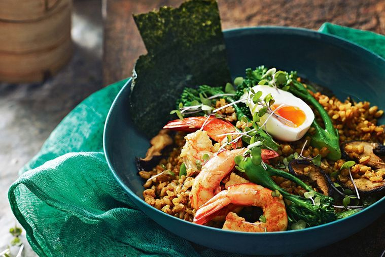

Barley and brown rice bowl

INGREDIENTS:
- - 3/4 cup (150g) barley
- - 3/4 cup (150g) brown rice
- - 1 bunch broccolini, chopped
- - 2 tablespoons sunflower oil
- - 100g shiitake mushrooms, sliced
- - 20 small green prawns, peeled, tails intact, deveined
- - 1 tablespoon curry powder
- - 1/4 cup (60ml) tamari or soy sauce
- - 1 tablespoon mirin
- - 1 teaspoon sesame oil
- - 2 hard-boiled eggs, halved
- - Mustard cress, to serve (optional)
- - 1 lemon, cut into wedges
- Bring a saucepan of salted water to the boil over medium heat. Add the barley and rice, and simmer for 30 minutes or until just tender. Drain well.
- Meanwhile, cook the broccolini in a pan of simmering salted water for 2 minutes, then drain and refresh in cold water. Set aside. Heat 1 tbs oil in a frypan over medium-high heat, add mushroom and cook, stirring occasionally, for 5 minutes or until golden. Add the prawns and cook for 2 minutes or until cooked through. Transfer mushroom and prawns to a plate, set aside and cover to keep warm.
- Heat remaining 1 tbs oil in the pan over medium heat. Add the curry powder, stirring for 10 seconds, then add the barley mixture. Season and toss to combine. Add the broccolini, prawns, mushroom, tamari, mirin and sesame oil, tossing for 3 minutes or until warmed through.
- Serve in bowls topped with egg and mustard cress (if using), with lemon wedges on the side